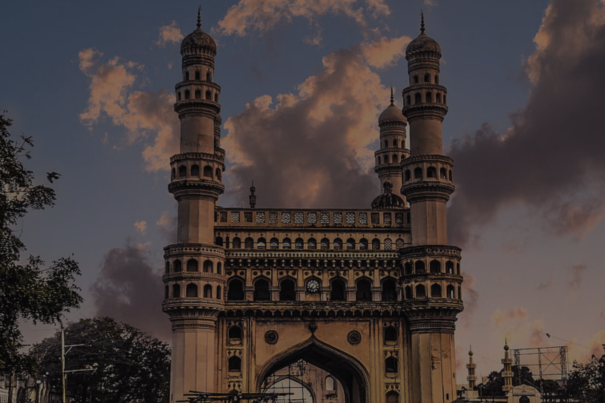

Charminar
-
Home
- Charminar

About
The Charminar (lit. 'four minarets') is a mosque and monument located in Hyderabad, Telangana, India.
Constructed in 1591, the landmark is a symbol of Hyderabad and officially incorporated in the emblem of Telangana.The Charminar's long history includes the existence of a mosque on its top floor for more than 425 years.
While both historically and religiously significant, it is also known for its popular and busy local markets surrounding the structure, and has become one of the most frequented tourist attractions in Hyderabad.
Charminar is also a site of numerous festival celebrations, such as Eid-ul-adha and Eid al-Fitr,as it is adjacent to the city's main mosque, the Makkah Masjid.
Map:
Things Around Charminar
Lad Bazaar:
This Charminar market during the Qutb Shah dynasty, it is believed, had around 14,000 shops. Even today Lad Bazaar, or its more popular moniker, Charminar market is the address in Hyderabad for stunning glass and lac bangles, outside of jewellery, silks, spices, perfume oil, incense and other knickknacks. Plenty of Irani chai stalls too for you to take a breather from all the walking around.
Makkah Masjid:
Get atop the first floor of Charminar for a panoramic view of the city and while you do, look out over another important landmark from the Qutb Shah reign, the Makkah Masjid. Commissioned by Muhammad Quli Qutb Shah, the central arch of this grand mosque has bricks made from the soil of Mecca, the holiest shrine in Islam.
Char Kaman & Gulzar Houz:
To the north of Charminar are four arches that were built along with it in the 16th century, these arches are known by many names such as Char Kaman, Charminar Kaman, Kali Kaman and more. The fountain in the heart of the Char Kaman is called Gulzar Houz.
Charminar Ticket Booking
The Charminar ticket price for Indian travellers and those from SAARC and BIMSTEC countries is INR 25. However, the Charminar entry ticket for foreigner is INR 300. The entry is free for children under the age of 15.
The Charminar is lit up between 7 pm and 9 pm, although closed to visitors by then, it is truly fascinating to behold it from a nearby street, and perhaps capture in your lens the monument that forms the city’s beating heart.
How to Reach Charminar
Nearest bus stand to Charminar:
The Charminar bus stop near Makkah Masjid on the Charminar Road in Panch Mohalla is the nearest bus stand to Charminar. It is about 800 metres away, and will take a brief 10-12 minute walk to get to the site.
Nearest railway station to Charminar:
The Hyderabad Deccan Railway Station (HYB), also known as Nampally Railway Station, at about 4 kilometres is the closest railway station to Charminar. There are Hyderabad MMTS (Multi-Modal Transport System) trains running from Hyderabad Deccan or Nampally to Lingampally/Falaknuma, and is a great way to get around to other places in the city.
Nearest airport to Charminar:
The Rajiv Gandhi International Airport in Shamshabad caters to domestic and international traffic to the city.The airport is around 15kms away. All major domestic and international airlines operate to and from this airport.